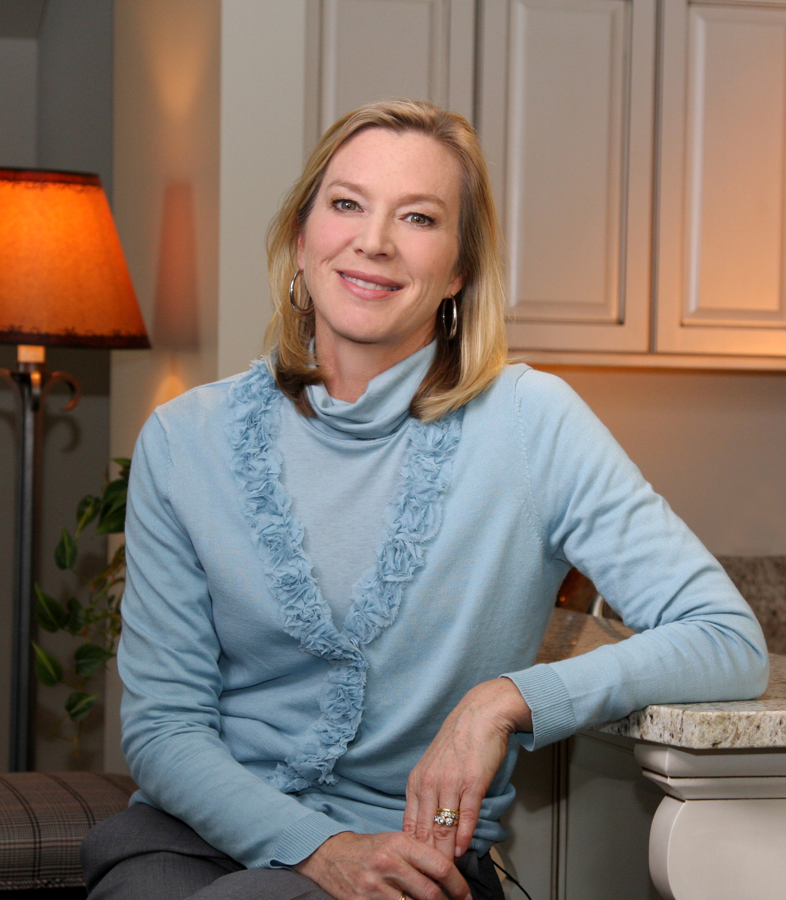

The first few hours, days and weeks following a brain injury are a difficult time. Getting over the shock of the initial injury and learning everything you need to know about what will come next can sometimes be overwhelming.
This video, developed by Shepherd Center, uses simple language and images of real people who have sustained a brain injury, as well as medical experts and advocates.
For more information, contact: edwardtharp@mac.com
Introducing a new video series available to trauma centers to help educate patients and families about their new injury and options for post-trauma care
Click here to learn more (button)
Narrated by Judy Fortin, former CNN anchor and medical correspondent.
Special introduction by Lee Woodruff, wife of ABC News reporter Bob Woodruff who sustained a traumatic brain injury while reporting on the war in Iraq.
Produced by Shepherd Center and KPKinteractive in collaboration with the American Trauma Society, the Brain Injury Association of America, National Spinal Cord Injury Association and the Christopher & Dana Reeve Foundation
Shepherd Center
Shepherd Center, located in Atlanta, Georgia, is a private, not-for-profit hospital specializing in medical treatment, research and rehabilitation for people with spinal cord injury and brain injury.
KPKinteractive
KPK is an award-winning boutique branding and communication group, founded in 2000 by well-known Atlanta communication leader Karin Pendley Koser.
Shepherd Center
2020 Peachtree Road, NW
Atlanta, GA 30309
Phone: 404-352-2020
Email: information@shepherd.org
shepherd.org
Copyright © 2019 Shepherd Center. All Rights Reserved.